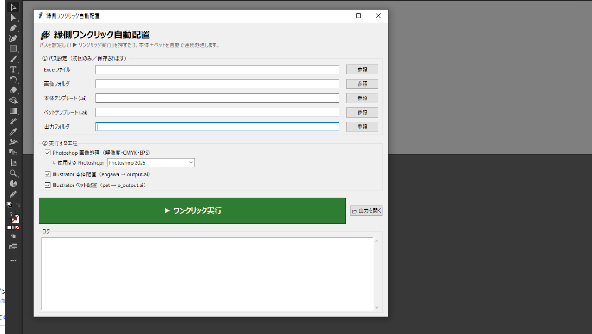
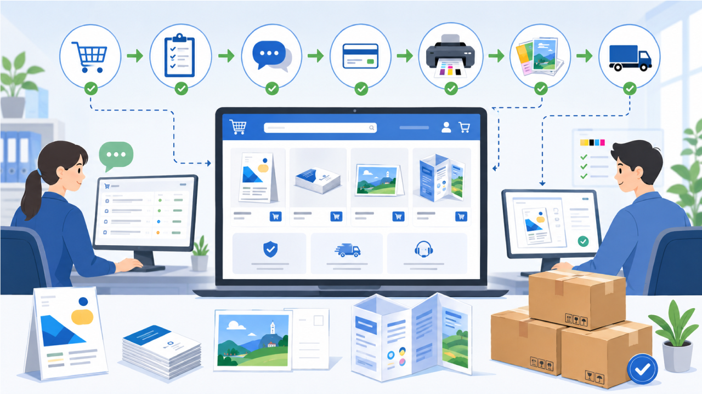
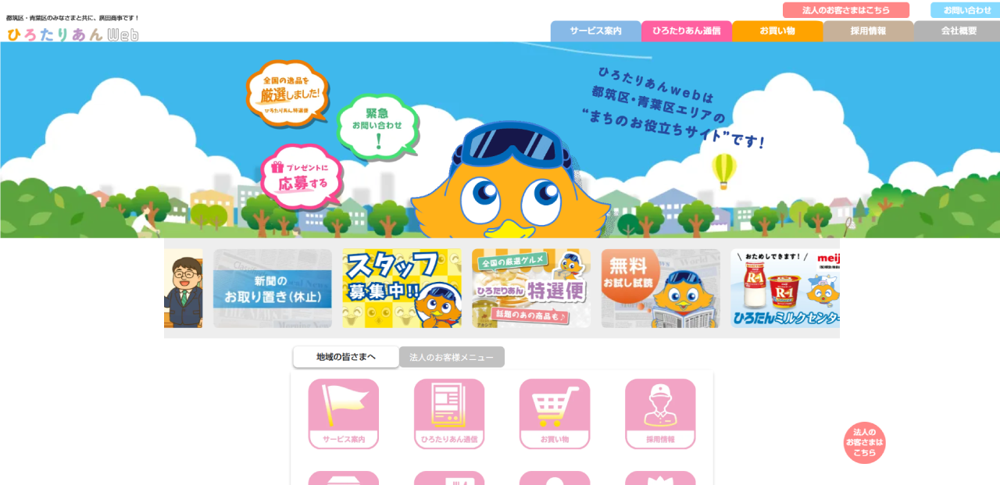
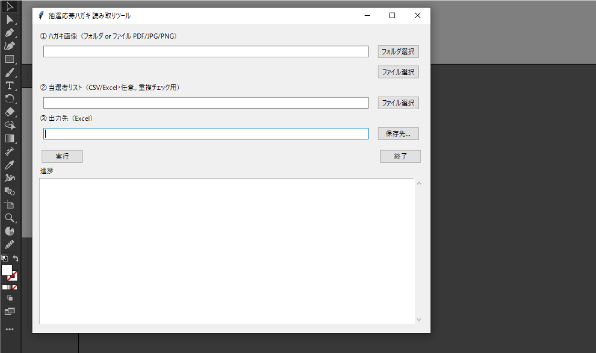
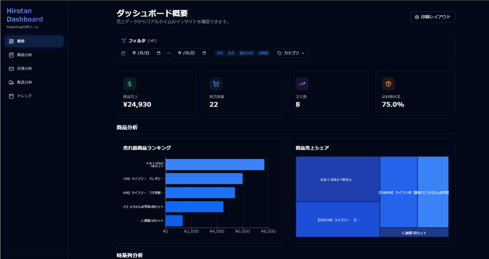
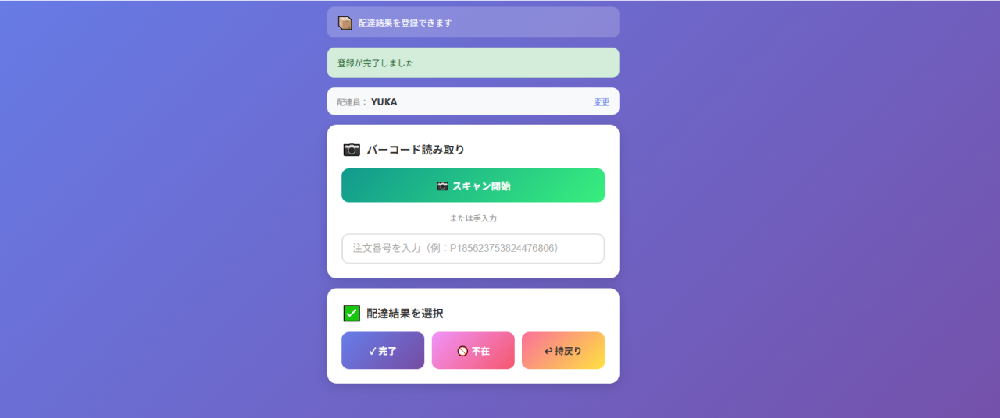
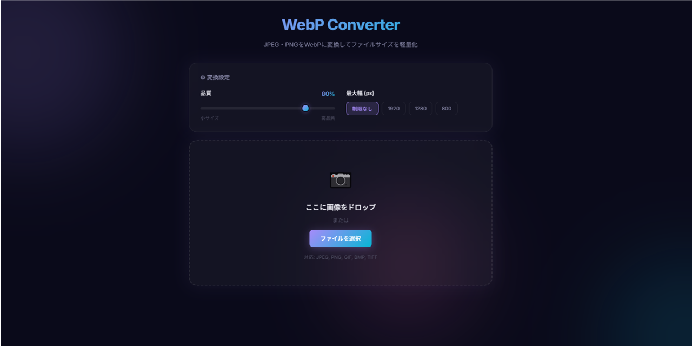
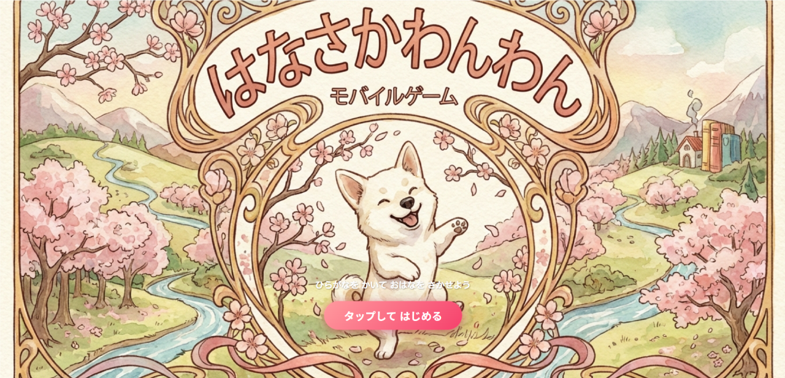

実績
課題 → やったこと → 成果 の形式で全件公開しています

Illustrator / Photoshop 作業の自動化
デザイン実務者だからこそ組める、定型作業のスクリプト自動化による時短。
定型デザイン作業を時短
環境: Antigravity / Adobeスクリプト

WEBショップの開設・構築・運営
ショップの開設・構築から、商品登録・日々の運営までを一貫して担当。現在も公開・運営中。
公開中: shop.hirotarian.ne.jp
担当: ショップ構築 / 運営

印刷通販ECサイトの運営（8年）
印刷通販のECサイトを8年間運営。商品管理・受注対応・顧客対応まで幅広く担当。
8年間の継続運営
担当: EC運営全般

WEBサイト全面リニューアル（デザインディレクション）
コーポレートサイトの全面リニューアルをデザインディレクション。サイト内のGIFアニメ制作も担当。
公開中: hirotarian.ne.jp
担当: デザインディレクション / GIFアニメ制作

操作サポートAIチャットボット
Illustrator などデザインソフトの操作方法に即回答するAIアシスタントを構築。
調べる時間を短縮し、自己解決を支援
環境: Antigravity

AI秘書 第2世代（GAS × ChatGPT版）
同じ仕組みを異なるAI基盤（サーバーレス）で再構築。環境を選ばない再現性の証明。
PC不要・クラウドのみで24時間稼働
環境: Google Apps Script / OpenAI API

抽選ハガキOCRツール
手書き応募ハガキを読み取ってExcelへ一覧化するアプリをAIで開発。過去当選者との重複も自動検出。
手入力とチェック作業を自動化
環境: Claude Code / Excel

ストレスチェック集計自動化
formrunで回答を収集し、厚労省版プログラムへ取込可能なCSVへ自動変換。
紙配布・手集計のフローをデジタル化
環境: Claude Code / formrun

ダッシュボードアプリ
散在するデータを1画面に集約し、経営判断・現場共有に使える形へ見える化。
状況把握をリアルタイム化
環境: Antigravity

配達員向け 荷物管理アプリ
バーコード読み取りで荷物の所在をリアルタイムに把握。紙の管理から脱却。
荷物の所在をその場で把握
担当: 企画・開発

従業員シフト表アプリ
シフトの作成・共有を効率化するアプリを構築。
シフト作成の工数を削減
環境: Antigravity

QGISエリアマップ作成
配布エリアなどの地図情報をQGISでデータ化。ポリゴン作成により面積・世帯数の把握を可能に。
紙の地図管理をデータ化
環境: QGIS

microCMSでの効率化
コンテンツ管理をmicroCMSへ移行し、更新フローを効率化。
コンテンツ更新の手間を削減
環境: Antigravity / microCMS

釣り雑誌 公式サイトの構築・運営
雑誌公式サイトの構築から運営までを担当。WEB制作の原点となった仕事。
構築から運営まで一貫対応
担当: サイト構築 / 運営

WebP一括変換ツール（HTML）
ブラウザで開くだけで画像をWebPへ一括変換できるHTMLツールを作成。
画像の軽量化作業を効率化
環境: HTML / JavaScript

AI秘書（Claude版）
Google Calendar × Google Chat 連携で予定通知・リマインドを完全自動化。重複登録チェック付き。
予定確認の手作業を自動化
環境: Claude Code / Google Workspace

店舗情報リスト化ツール（約200店）
WEBサイトから複数店舗の情報を自動収集し、一覧リストへ整形。手作業の転記をゼロに。
200店舗分の転記作業を自動化
環境: Antigravity

ひらがな学習ゲーム「はなさかわんわん」
幼児向けひらがな学習ゲームを企画からAI協働で実装まで完遂。
企画から制作までを一人で行う
環境: Claude Code / HTML5